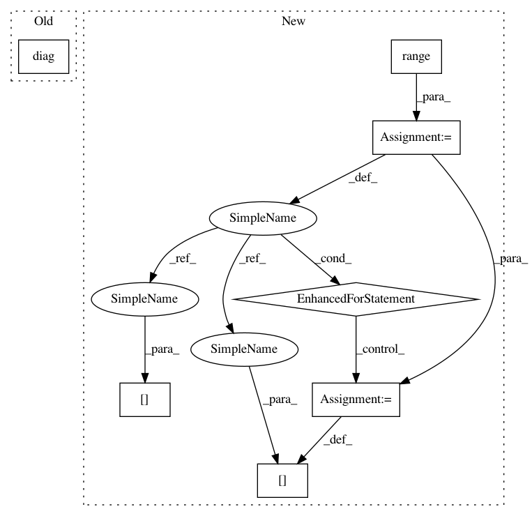

506b234094009d55d326f1ce957f53f15d4b65ee,geomstats/spd_matrices_space.py,,group_log,#Any#,52
Before Change
assert np.all(eigenvalues > 0)
diag_log = np.diag(np.log(eigenvalues))
log = np.dot(np.dot(vectors, diag_log), vectors.transpose())
return log
After Change
print(vectors.shape)
assert np.all(eigenvalues > 0)
diag_log = np.zeros((n_sym_mats, mat_dim, mat_dim))
for i in range(n_sym_mats):
diag_log[i] = np.diag(np.log(eigenvalues[i]))
log = np.matmul(diag_log, np.transpose(vectors, axes=(0, 2, 1)))
log = np.matmul(vectors, log)
print("log")
print(log.shape)
In pattern: SUPERPATTERN
Frequency: 4
Non-data size: 7
Instances
Project Name: geomstats/geomstats
Commit Name: 506b234094009d55d326f1ce957f53f15d4b65ee
Time: 2018-02-26
Author: ninamio78@gmail.com
File Name: geomstats/spd_matrices_space.py
Class Name:
Method Name: group_log
Project Name: geomstats/geomstats
Commit Name: fc77bf19a2929bdb181f95f0ea272eb7283c4efc
Time: 2018-05-03
Author: ninamio78@gmail.com
File Name: geomstats/spd_matrices_space.py
Class Name: SPDMatricesSpace
Method Name: sqrtm
Project Name: geomstats/geomstats
Commit Name: 506b234094009d55d326f1ce957f53f15d4b65ee
Time: 2018-02-26
Author: ninamio78@gmail.com
File Name: geomstats/spd_matrices_space.py
Class Name:
Method Name: group_exp
Project Name: SheffieldML/GPy
Commit Name: 9a97ad7348987ecaeecbc7eae49346bb17d53c86
Time: 2013-03-07
Author: james.hensman@gmail.com
File Name: GPy/kern/coregionalise.py
Class Name: coregionalise
Method Name: dKdiag_dtheta